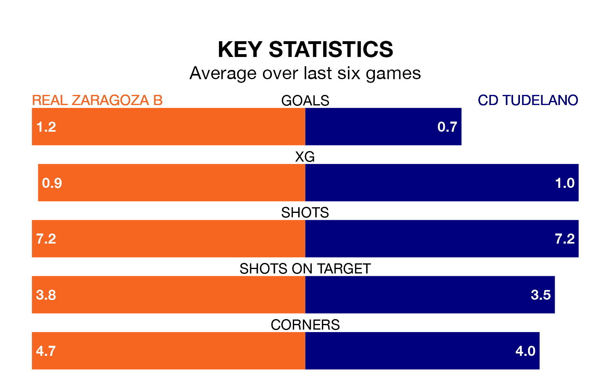

CD Tudelano come to Ciudad Deportiva del Real Zaragoza to play Real Zaragoza B on early Sunday in terrible form, having collected just two points from their last six games.
The visitors have drawn two and lost four of their last six fixtures, while Zaragoza B have four wins and a draw.
With 25 goals in 17 games so far this season, Tudelano are scoring more than average in the league with 1.5 goals per game. And they are conceding at an average rate, letting in 19 goals at a rate of 1.1 per game.
Zaragoza B, meanwhile, are average scorers, with 1.1 goals per game. They have conceded 0.6 goals per game.
The hosts are sixth in the table after 17 games, of which they have won eight and drawn five, earning 29 points.
The away team are two places behind Zaragoza B in eighth, with seven wins and five draws putting them on 26 points.
Zaragoza B's last match was on January 7, a 0-0 draw against CD Calahorra.
Tudelano lost 3-2 against Deportivo Alaves B last time out, also on Sunday.
Updated: 11:31, 09/01/24